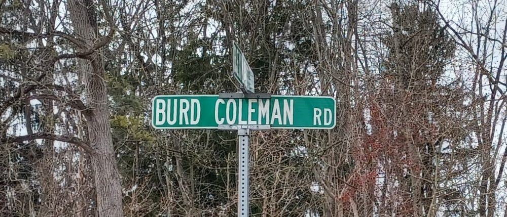
Long-time residents of Cornwall know the name well: Burd Coleman Road, Burd Coleman Village, the old Burd Coleman Furnaces. Fewer know that for the better part of a century, it was spelled a different way entirely — "Bird."
The Coleman Family
Robert Coleman named his sons and grandsons with a recycling set of family names: Robert, William, Edward, Thomas, James, George. Among them, one name stands out as unusual: "Bird." His son Thomas Bird Coleman (1794–1864) carried it, and so, a generation later, did his grandson.
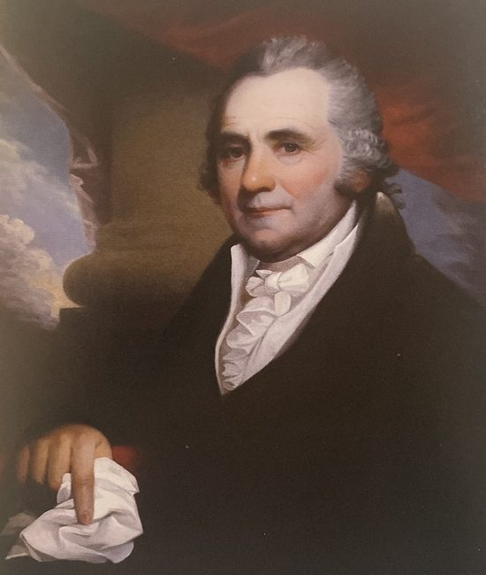
Why "Bird"? This author's working theory is that Robert Coleman named his son Thomas Bird in honor of a contemporary, Mark Bird — and that the affection ran deep enough to outlast a business rivalry, a war, and a bankruptcy. (A poem written by this same Thomas Bird Coleman is the subject of a separate story, "Anne Caroline Coleman, Preserved in Verse.")
The Bird Connection
Mark Bird (1739–1816) was one of colonial Pennsylvania's great ironmasters, owner of the Hopewell and Cornwall-adjacent furnaces, and a colonel who armed the Continental Army almost single-handedly from his own forges during the Revolution — supplying cannon, cannonballs, and even building a small fleet of vessels at his own expense.
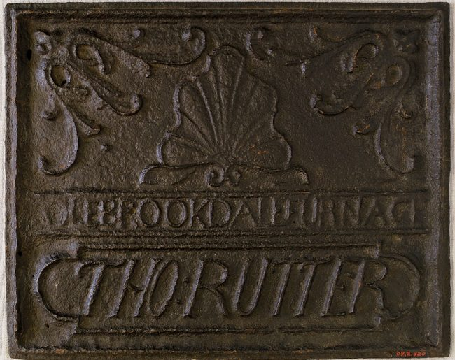
Bird and Robert Coleman were more than acquaintances — they were business partners and, for a time, competitors for the same ore. Coleman's own furnace ledgers record purchases of "Mark Bird's ore," suggesting Bird supplied raw material to Cornwall even as their own furnaces vied for regional dominance.
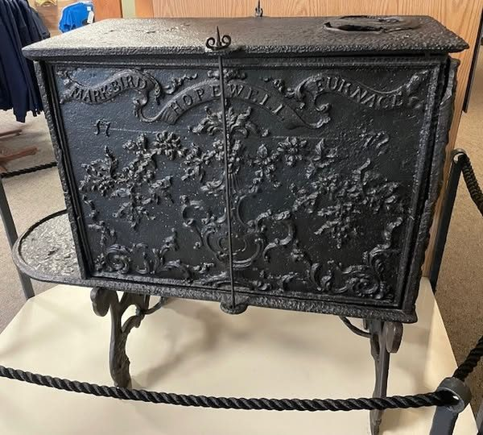
Bird's Plea for Help
The war that made Bird's cannons essential also nearly ruined him. Having poured his own fortune into arming the Continental cause, Bird found himself deeply in debt by war's end, his estate at Hopewell mortgaged and his credit exhausted. Surviving correspondence shows him writing to Robert Coleman and other former associates, pleading for loans and patience from creditors.
Coleman, whose own fortune was by then well-established, appears to have extended what help he could, though it was not enough to save Bird from eventual financial collapse. By the 1780s, Bird had sold off much of his ironworks empire and relocated south, spending his final years in North Carolina, a diminished figure compared to the war hero he had been.
It was against this backdrop — a friendship forged in the charged partnership of wartime industry, tested by one man's financial ruin — that Robert Coleman is believed to have named his own son Thomas Bird Coleman, born in 1794, two decades after the two men first did business together.
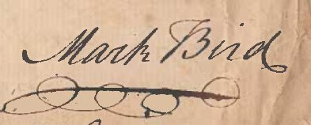
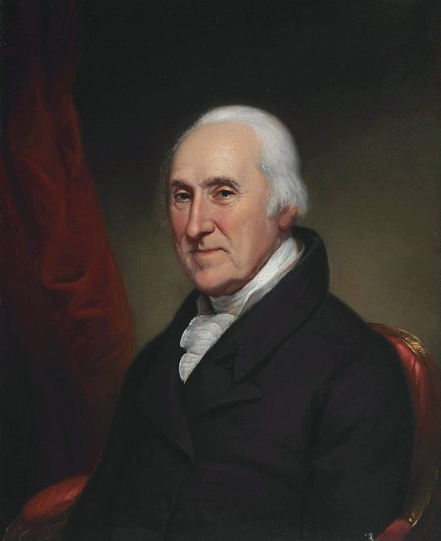
The Grubb and Burd Families
Here the story takes its first turn toward confusion. Quite independently of the Coleman-Bird friendship, another prominent Pennsylvania iron family, the Grubbs of Hopewell and Mt. Hope, had their own connection to a man named Burd — spelled with a "u."
Col. James Burd (1726–1793)
Colonel James Burd, a Scottish-born surveyor and military officer, served in the French and Indian War and later became a prominent figure in Lancaster County society. His daughter married into the Grubb family, and the "Burd" name was carried forward by their descendants as a middle or given name — entirely unrelated, genealogically, to "Bird" Coleman.
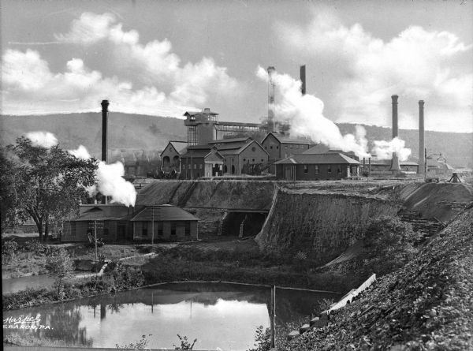
Burd 2.0
The Grubb family's own fortunes intersected with the Colemans repeatedly over the generations through shared ownership interests in the Cornwall ore banks. Peter Grubb Jr., grandson of the mine's original discoverer, died of suicide, leaving his estate to two teenaged sons who would grow into prominent ironmasters in their own right. Their descendants carried the "Burd" name proudly through three generations.
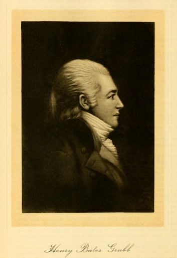
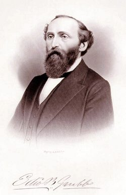
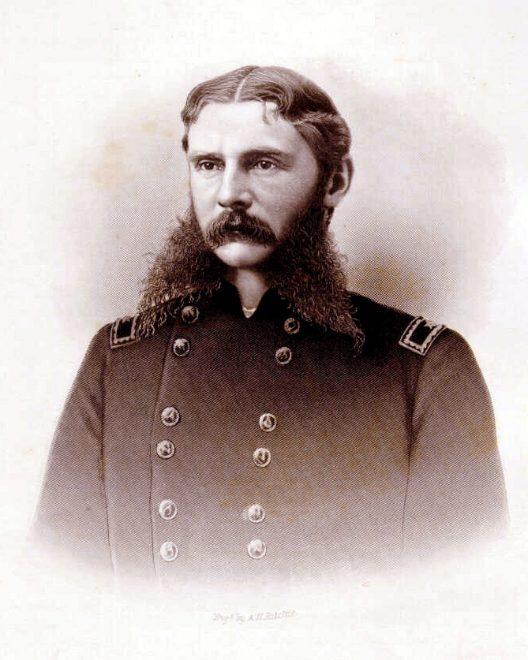
Bird Coleman Furnaces / Burd Coleman Village / Burd Coleman Road
When Robert Coleman's descendants built new furnaces at Cornwall in the mid-19th century, they named them for Thomas Bird Coleman — "Bird Coleman Furnaces," spelled just as his name had always been spelled, honoring Mark Bird. The surrounding worker housing became known as "Bird Coleman Village," and the road that served it, "Bird Coleman Road."
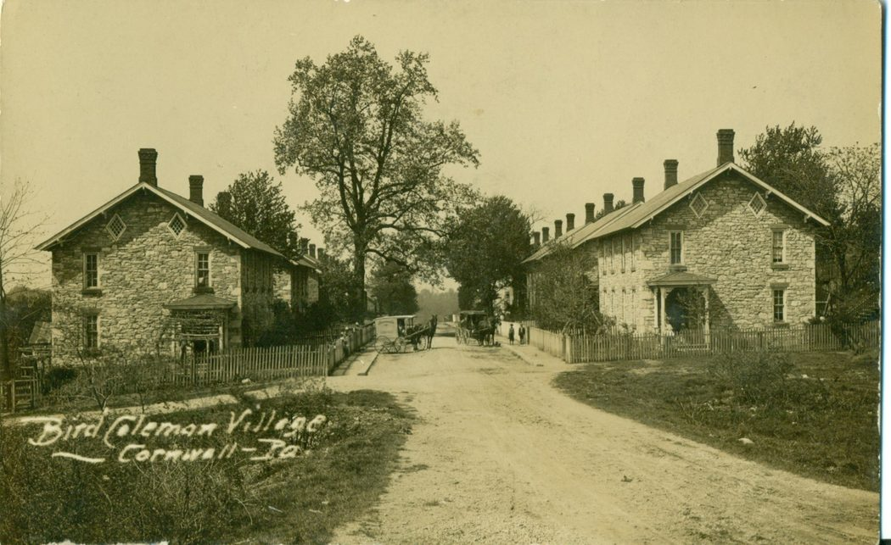
"Bird" It Is (Or Is It?)
For decades, maps, deeds, and newspapers alike spelled it "Bird." Then, sometime after Bethlehem Steel's acquisition of the Cornwall properties in the early 20th century, the spelling began to shift.
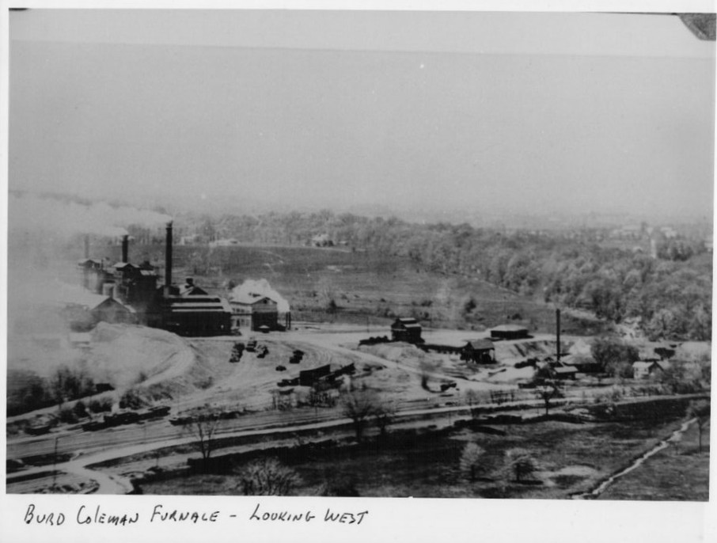
The Grittinger Effect
Henry Grittinger's early 20th-century histories of Lebanon County's iron industry — still a primary reference for local historians — consistently used "Burd," whether through his own error, a source's error, or a genuine belief that the name honored the Burd family rather than Mark Bird. Grittinger's influence on subsequent local histories was substantial, and later writers largely followed his spelling.
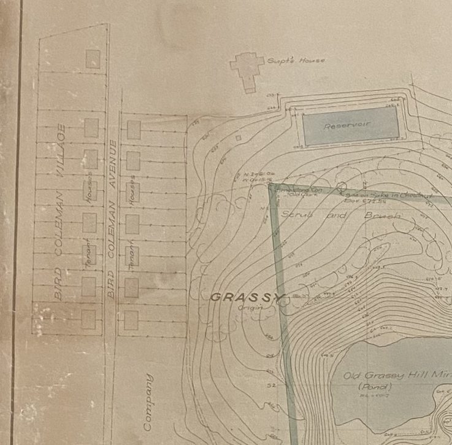
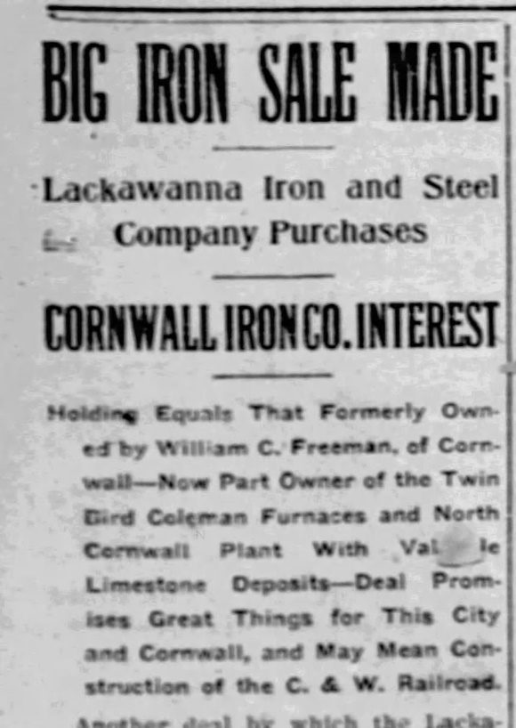
The Bethlehem Steel Effect
Bethlehem Steel's own corporate records and correspondence, once they took over Cornwall operations, standardized on "Burd" — likely following Grittinger's already-established usage rather than any original Coleman-era documentation. Once printed on company letterhead, maps, and payroll records for long enough, "Burd" became the spelling of record, and it has remained so ever since on modern road signs and property deeds.
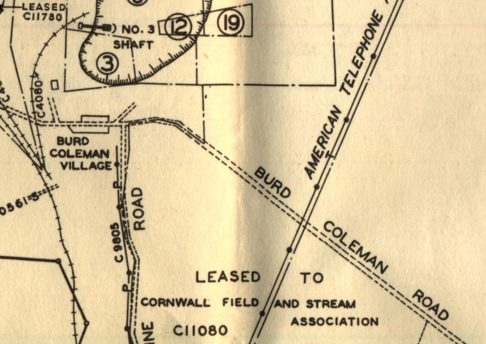
Closing
So which is correct? Genealogically, the honor belongs to Mark Bird, colonial ironmaster and Revolutionary War quartermaster of cannon — making "Bird" the historically faithful spelling. But a century of maps, deeds, and company records has settled the matter in practice, if not in etymology. Drive Burd Coleman Road today, and you'll find the street sign sides with Bethlehem Steel, not with Robert Coleman's original intent.
Originally published on LebTown, April 2, 2025.